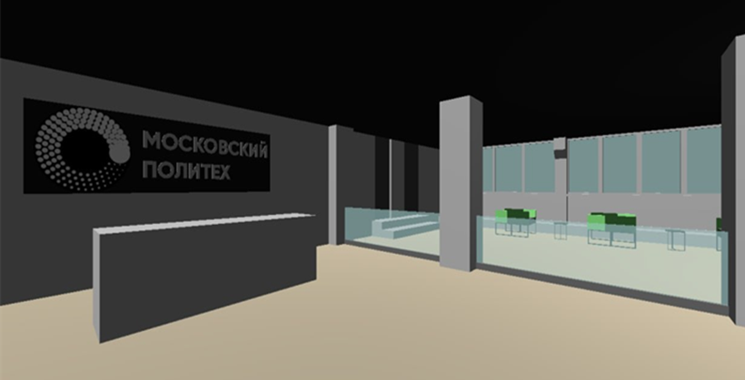
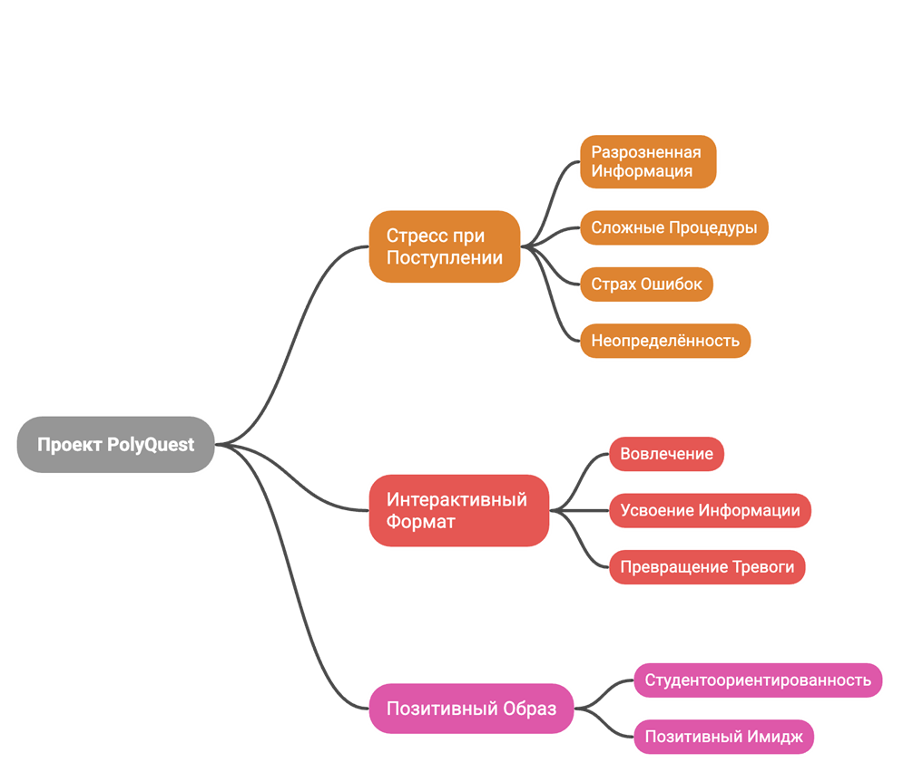

Исследование аудитории на Дне открытых дверей
Команда посетила активности Московского Политеха, пообщалась с потенциальными абитуриентами и собрала наблюдения о вопросах, которые вызывают больше всего тревоги.
Новости разработки
Короткие записи о том, как команда продвигается от идеи к игровому прототипу.

Команда посетила активности Московского Политеха, пообщалась с потенциальными абитуриентами и собрала наблюдения о вопросах, которые вызывают больше всего тревоги.

Гейм-дизайн команда подготовила диалоги с NPC, чек-лист поступления, квесты по кампусу и задания на поиск информации. Разработчики начали переносить прототипы в Godot.
Проект обсуждался с отделом по молодёжной политике Московского Политеха. Демонстрационное видео помогает показать, как материалы команды складываются в будущую игру.